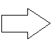

リンクビューには、
それぞれのアイコンは右下の図のようになっています。
アイコンをダブルクリックすることでリンク先(元)のノードにジャンプできます。リンクビューの右クリックメニューからジャンプ元のノードに戻ることも可能です。
ファイルへのリンクの場合は拡張子に関連づけられたアプリケーションでそのファイルを開きます。URLの場合は、Webブラウザーでリンク先のページを開きます。
|
|
リンクビューにファイルをドラッグ＆ドロップ可能です。
|
エクスプローラからファイルを ドラッグ＆ドロップすると．．． |
 |
ファイル名をリンク名とするリンクができます。 |
|
エクスプローラからフォルダを ドラッグ＆ドロップすると．．． |
フォルダ名をリンク名とするリンクができます。 |
iEditファイルをドラッグ＆ドロップするとファイルを開くかリンクとして登録するかをダイアログで選択することになります。
ドラッグ＆ドロップでななく、リンクビューで右クリックしてコンテキストメニューから「他のファイル/URLへのリンク」を選択してもファイルのリンクを追加できます。
ドラッグ＆ドロップでファイルリンクを作成した場合は、ファイルのフルパスが設定されます。リンクプロパティ設定ダイアログでリンク元のiEditファイルからの相対パスを指定することもできます。
|
IEやFirefoxの「お気に入り/ブックマーク」からリンクを ドラッグ＆ドロップすると．．． |
URLリンクができます。(※) |
※インターネットショートカット呼ばれる拡張子「.url」のファイルを認識してURLリンクを作ります。
リンクビューにURLの情報を分野別に階層化して整理すると便利です。